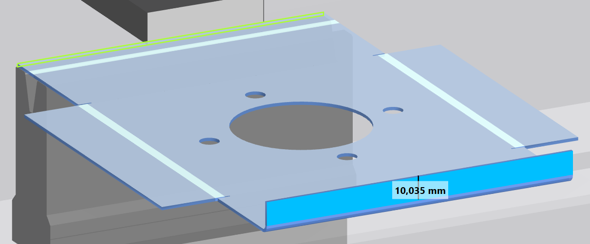
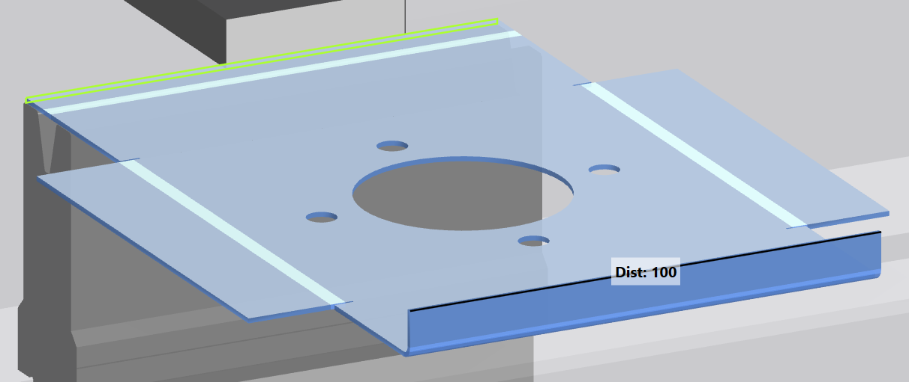
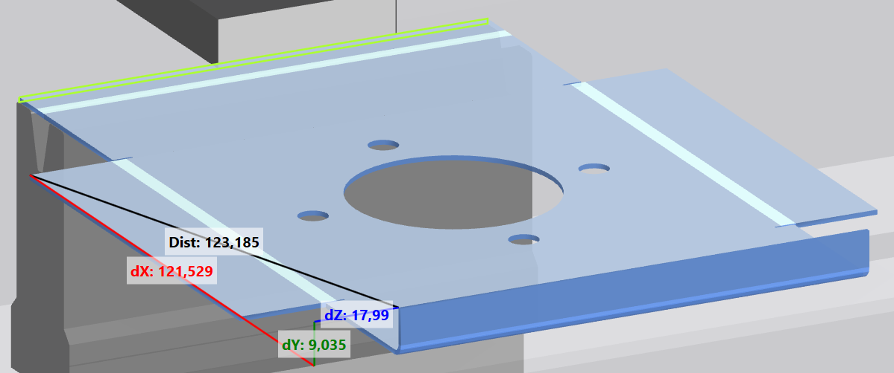

Met de aanzichtbalk kan de weergave in het 3D-venster worden aangepast. De volledige aanzichtbalk is beschikbaar in de menu's Produceren en Technologie bewerken. In het menu Gereedschappen is een beperkte aanzichtbalk beschikbaar. De aanzichtbalk bestaat uit de volgende onderdelen:
 Zoomfuncties
Zoomfuncties
Hier kan de grootte van het aanzicht in het aanzichtvenster worden gewijzigd.
-
 Aanzicht vergroten
Aanzicht vergroten - Aanzicht verkleinen
-
 Centreren van de actieve buigstap op beeldschermformaat
Centreren van de actieve buigstap op beeldschermformaat -
 Centreren van buigdeel van iedere buigstap op beeldschermformaat
Centreren van buigdeel van iedere buigstap op beeldschermformaat
Hier wordt de positie van de weergave in het aanzichtvenster gewijzigd. Het aanzicht wordt steeds tegen de richting van de pijlen in verschoven.
- Aanzicht naar rechts verschuiven
-
 Aanzicht naar links verschuiven
Aanzicht naar links verschuiven - Aanzicht naar beneden verschuiven
-
 Aanzicht naar boven verschuiven
Aanzicht naar boven verschuiven
 Positionering
Positionering
Hier wordt de oriëntatie van de weergave in het weergavevenster bepaald.
- Laat de weergave in het 3D-venster van bovenaf zien.
-
 Laat de weergave in het 3D-venster van links zien.
Laat de weergave in het 3D-venster van links zien. -
 Laat de weergave in het 3D-venster van rechts zien.
Laat de weergave in het 3D-venster van rechts zien. -
 Laat de weergave in het 3D-venster isometrisch zien.
Laat de weergave in het 3D-venster isometrisch zien.
 Gereedschapsweergave
Gereedschapsweergave
Dit bereik regelt de weergave van de verschillende machinecomponenten.
-
 Schakelt de weergave van de ondergereedschappen in of uit.
Schakelt de weergave van de ondergereedschappen in of uit. -
 Schakelt de weergave van de bovengereedschappen in of uit.
Schakelt de weergave van de bovengereedschappen in of uit. -
 Schakelt de weergave van de machine in of uit.
Schakelt de weergave van de machine in of uit.
 Weergave buigproces
Weergave buigproces
- Geeft het huidige buigproces voor de uitvoering weer.
 Bewerken
Bewerken
Schakelt de hoekschaal uit en weer in. Als de hoekschaal uitgeschakeld is, kunnen geen verdere buigingen door selectie op het deel worden geplaatst.
Alle functies in de werkbalk kunnen worden uitgevoerd en geselecteerde buigingen kunnen worden gewist.
Info: De button bevindt zich in de profieleditor.
-
 Geeft de lengte van het geselecteerde been in de 3D-weergave weer.
Geeft de lengte van het geselecteerde been in de 3D-weergave weer.
Fig.: Weergave van lengte voor één been

Bij buiglijnen die een rechte hoek ten opzichte van elkaar hebben, wordt de maat van beide beenlengten weergegeven (A).
Fig.: Weergave van lengte voor meerdere benen

- Meet de afstand tussen twee punten in een driedimensionale ruimte.
- Als de beide punten op een as liggen, dan wordt alleen één afstand weergegeven.
- Als de beide punten op een vlak liggen, dan worden drie afstanden weergegeven.
- Als de beide punten zich in een ruimte bevinden, dan worden vier afstanden weergegeven.
Fig.: Weergave van lengte aan een as

Fig.: Weergave van lengte op een vlak

Fig.: Weergave van lengte in een ruimte
